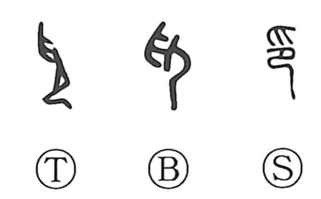

印

Kun: shirushi | On: in
seal ・ mark ・ stamp ・ print
Explanation
印 combines 爪, fingertips descending from above, with 卩, a kneeling person. The hand presses the person down. Its first meanings concern holding down, restraining, and bringing someone under control.
The same pressing action later names the application of a seal. From pressing the seal come the seal itself, the impression it leaves, and a mark used to identify or authenticate something.